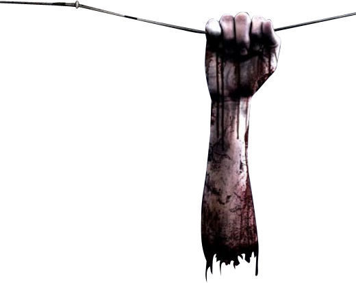
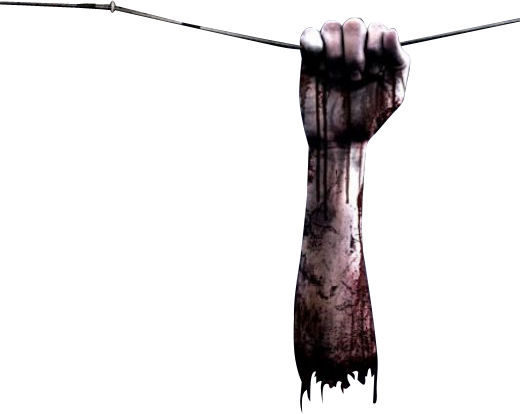
-
Freddy Krueger
Freddy surge en las pesadillas de los niños y adolescentes de Elm Street para asesinarlos, ya que los actos cometidos tienen repercusión en la vida real.
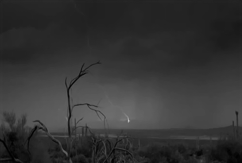 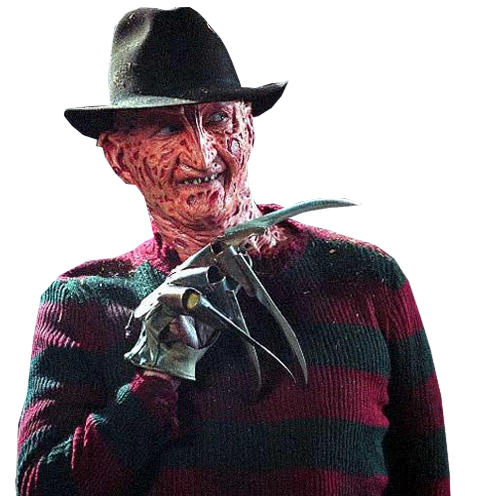 -
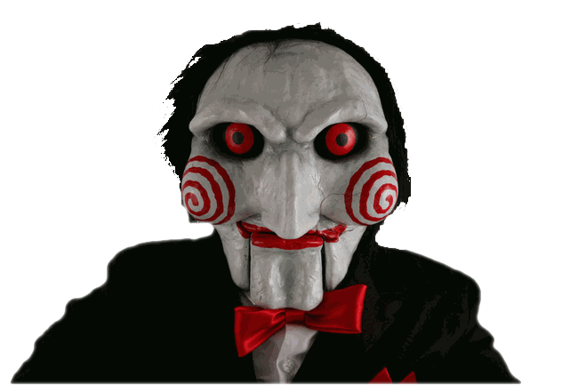
Billy (SAW)
El objetivo principal de Billy es entregar los mensajes grabados en cassette de Jigsaw a sus víctimas, a menudo mediante una pantalla de televisión para distribuir los detalles de las sádicas trampas y los medios que les son entregados a las víctimas para darles la oportunidad de sobrevivir.
-
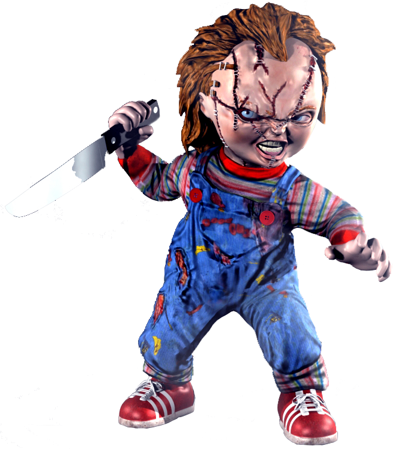
Chucky
Es un muñeco que fue poseído por medio de magia vudú por el asesino en serie Charles Lee Ray.
-
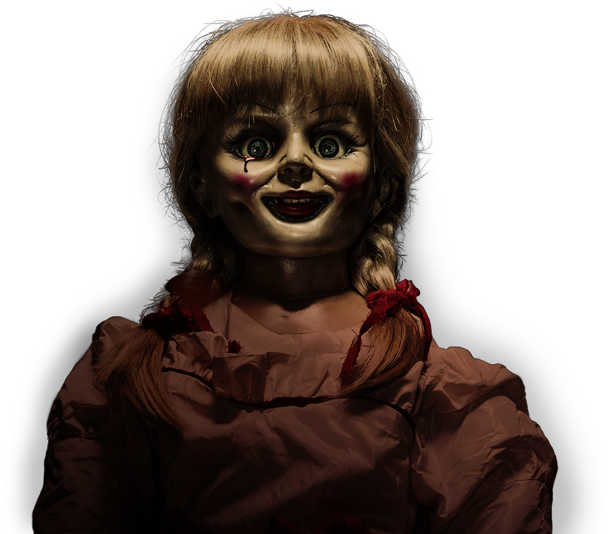
Annabelle
Fue uno de los sucesos investigados por los parapsicólogos Ed y Lorraine Warren en 1970. Una muñeca con una vida por dentro muy vengativa.
-
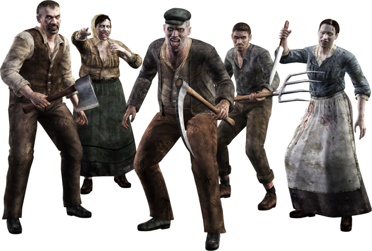
Virus-T (Resident Evil)
El Virus-T es un virus mutagénico creado por la Corporación Umbrella. Fue derivado del virus Progenitor y diseñado para aprovechar sus propiedades mutagénicas para el desarrollo de una nueva forma de arma biológica conocida como "B.O.W." , una criatura viva modificada genéticamente para su uso como una máquina de matar.
-
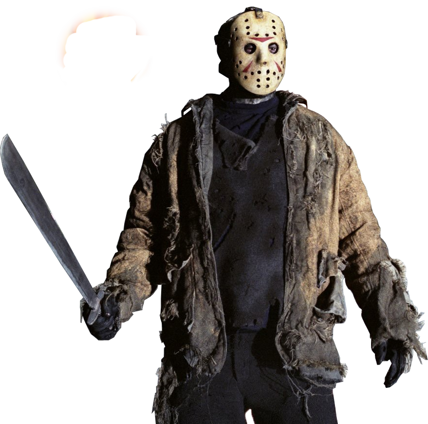
Jason Voorhees
Es el protagonista multihomicida de la serie de películas de terror "Viernes 13" (Friday the 13th), serie del género slasher.
-
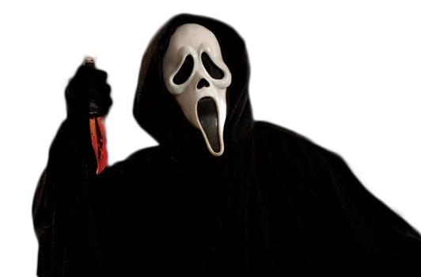
Scream
Sidney Prescott, se convierte en el objetivo de un misterioso asesino, el cual emplea su fanatismo por las películas de terror para asustar a sus víctimas y despistar a la policía.
-
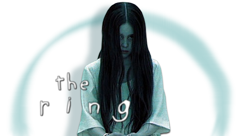
The Ring
Se centra en una cinta de video maldita misteriosa que contiene una serie aparentemente aleatoria de inquietantes imágenes. Después de ver la cinta, el espectador recibe una llamada telefónica en la que la voz de una chica anuncia que el espectador va a morir en siete días.
-
Participantes
- Alfredo Castro
- Nathaly Orellana
- Darío Vásconez
- Jamilette Grijalva
- Christopher Navarro
- Ana Barragán